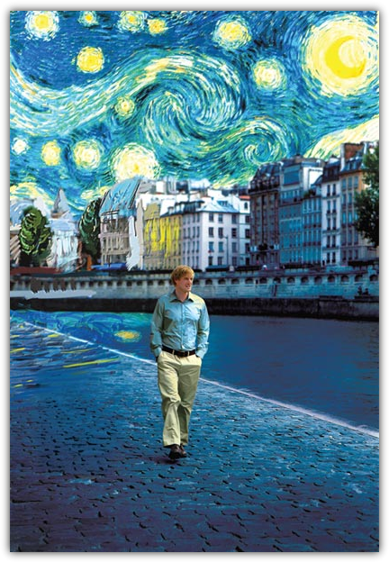

Sunday, June 26th, 2011 11:13am

Thursday, June 02nd, 2011 1:02am

我上大学的时候，电视上有一个竞赛节目叫做《三星智力快车》，考校参赛者对各种文化知识的掌握程度。我后来有个好朋友是这个节目某一年的全国冠军，这个事实也成为后来我们常常揶揄他的话题之一。当然，把许多人名地名历史事件熟记在心不是一件坏事，在 party 上和人闲谈的时候它多少还是一项长处。但是掌握好从因为博学而令人佩服到因为博学而令人讨厌之间的分寸有时候并不太容易，我自己也很多次因为这问题苦恼过。说真的，人们真的会因为一个人「懂得多」而喜欢他么？
在看《午夜巴黎》的时候我脑海里很多次飘过这问题。电影里有一个角色，Paul，是个标准的什么都懂一点的讨人嫌的「知道分子」。他可以在罗丹雕塑园里和导游争执一个作品的创作细节，可以在毕加索的画作面前讨论画中人的原型，女主人公因而崇拜地看着他，浑然不顾身旁未婚夫恼怒的眼神。基本上，你可以看出来，这里存在着一种温和的讽刺。任何一名受过良好教育的中产阶级观众（这是这部电影的主要放映对象）都会对这种讽刺报以会心的微笑。
但是另一方面，作为观众你很快就会发现，这部电影实际上期待它的观众是一个像 Paul 一样的人，否则就很难捕捉到后面的情节的微妙涵义。如果你听到 Zelda 这个名字的时候不能立即心领神会，你就失去了一个笑点。如果你不能立刻反应出 Pablo 是谁，你就又错过了一个包袱。如果你听不懂法语，虽然并不影响看完这部电影，但是在大段法语对白中你只能尴尬地坐着，觉得自己仿佛受到了歧视。这种对观众的文艺知识储备的调戏很快就到达了一种令人生厌的程度，恰似在 party 上遇到一个满口 Habermas 或者 Derrida 的人时的感觉。当主人公第无数次用夸张的美国口音惊叹到「哦，Eliot，天哪你真是 T. S. Eliot 么」的时候，我终于彻底失去了耐心。导演不知道有一种东西叫做分寸感么？同一个包袱抖太多次是会让人倒胃口的。
不幸的是，这部电影从头到尾都在纠结这个问题。主人公 Gil 热爱这些人名，热爱和海明威或者达利推杯换盏的感觉，而他喜欢的姑娘 Adriana 也是一样，只不过对象换成了高更和德加。Gil 和 Paul 看似互相敌对，其实只不过是同一枚硬币的两面，他们的彼此嘲讽可以看做是伍迪艾伦（或者任何一个类似的文艺中年）的自我嘲讽。你可以在现世如鱼得水，也可以一心对想象中旧日的黄金时代心驰神往，甚至可以举棋不定进退两难，但是你念兹在兹的永远都是这些兜兜转转的风流人物而已。
但是，一个「受过良好教育的中产阶级观众」（有没有更短的词可以表达出同样含义的？）真的就只能以这样的目光审视巴黎么？
如果要我举出这部电影里我最喜欢的五分钟，我会毫不犹豫的选择最开头的那一段风光幻灯片。不仅仅是因为它美，而且因为那里没有 Gertrude Stein，没有 Man Ray，没有 Luis Buñuel，只有买法棍的家庭妇女，在塞纳河边并肩絮语的恋人，在铁塔边嬉戏的孩子，以及路灯下寂寥的石板路。巴黎当然是流动的盛宴，但是不仅仅如此。
当 Gil 和 Adriana 走在午夜巴黎安静的街头时，我曾经以为他们可以多走一会儿，走慢些，聊些不包含人名的话题，或者什么也不说，只是并肩慢慢走一段路就好。还有什么地方比午夜的巴黎深巷更适合散步的么？
可是这一切都还没来得及发生，就又有一趟马车驶过，载着他们奔赴下一个名流荟萃的欢场去了。
Monday, May 30th, 2011 4:19am

学校放假了，这座本来就冷清的城市更是彻底寂寞下来。每次我走上街道，都有一种走在超现实世界里的感觉。楼都在，车也都在，树叶绿得漾出湿意，水面映照出通透的天空，只是没有人，像是被无可奈何遗弃的世界尽头。在我居住过的所有城市里，这毫无疑问是最安静的一个了。
我在电话里对朋友说：我真不能相信自己的青春是在这么孤独的环境里结束的。
若干年后，当我回忆起我的二十八岁，我能记得什么呢？它像是勃拉姆斯第四交响曲末乐章中部的那个长笛带出的忧伤旋律，毫不温暖，只是酸楚。我也许会记得自己在无人的街道上骑着自行车飞驰，记得自己在雪夜里看着路灯前雪花飞舞，记得一望无尽的原野上星罗棋布的森林和湖水，但是更深刻的记忆恐怕是来自于一个又一个周末的午后，我一个人坐在宽大的公寓里，看着窗外城市的天际线，自己和自己说话，直到陷入无以名状的沮丧。
不止一次有人对我说：你为什么要一直怀念过去呢？它再好，也已经过去了呀。
是的。但是和这空无一人的现实相比，那些回忆即使会带来锥心刺骨的痛楚，也仍然美得像是让人不愿醒来的梦一样。告别过去的唯一办法是过好眼下的生活，而这偏偏是我完全做不到的事。要承认这一点是颇为令人难为情的，可是我没法自欺欺人地说，我喜欢人生中的这一刻。
也许我可以勉强说服自己它也并不全然是坏事。我大可以做许多也许以后就不会再功夫做的事情，比如多学一门外语，比如好好看书，比如锻炼身体，比如更真切地了解自己的内心。这些都是很好的时间投资，而我还不老。
然而有的时候，我只是想屈服于自己的软弱。在这仿佛一切都静止了的夏日的雨中的午后，我知道我有多难过，我知道我有多希望所有这一切都能在一刹那间终结。我当然应当振作，可是，说实话，有谁在乎呢？

{kind=link}
{kind=link}
{kind=link}
{kind=link}
{kind=link}
{kind=link}
{kind=link}
{kind=link}